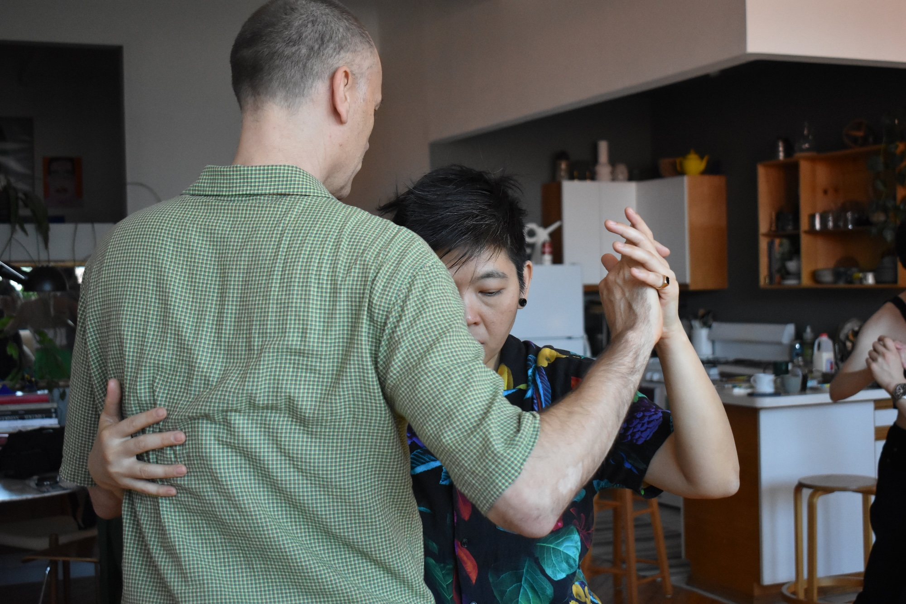
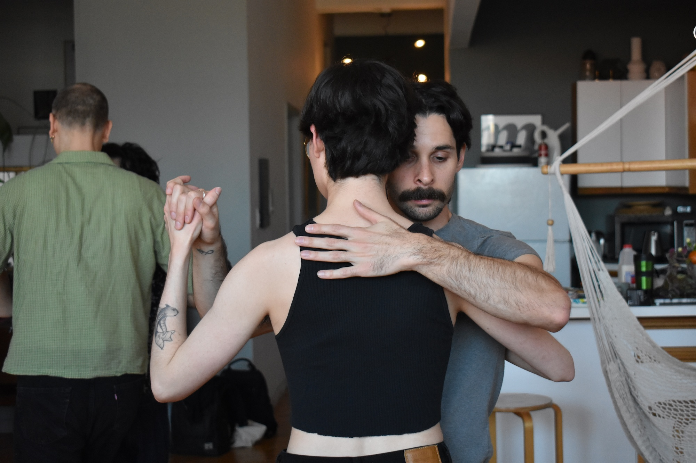
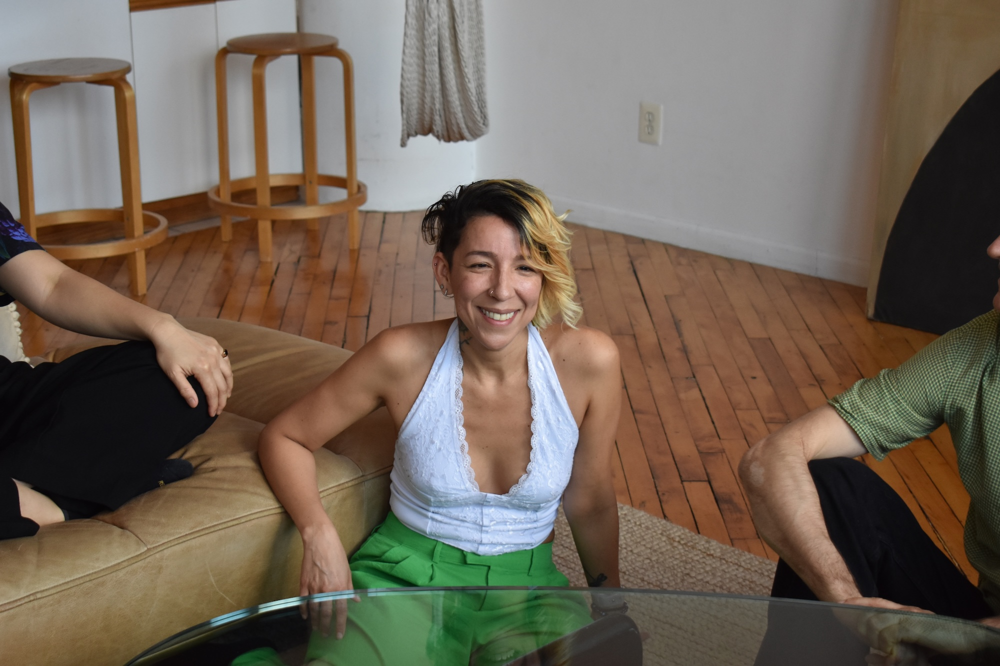
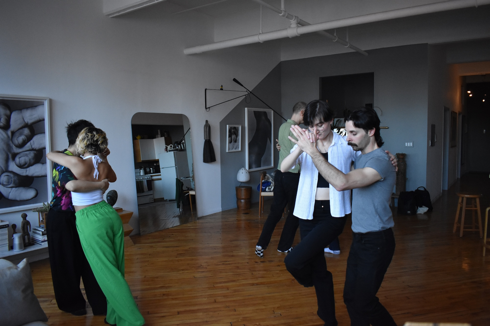
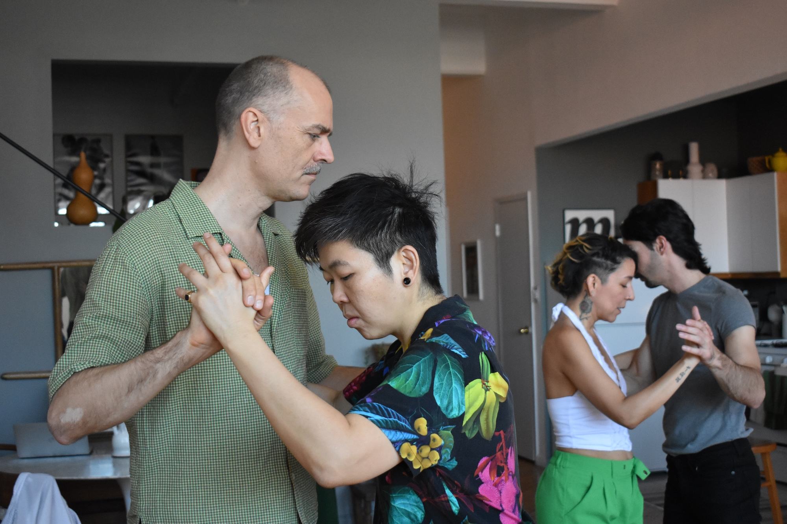
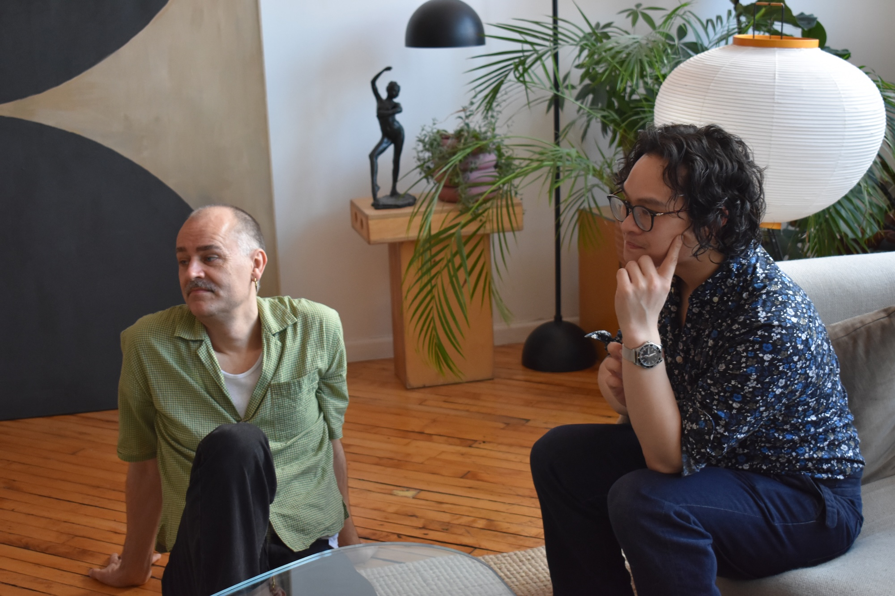

Beginnings
How did you start dancing tango?

Phi Lee
I started learning tango in 2014. I got interested in tango when I visited a queer tango Milonga in Buenos Aires in 2012 but I was living in the countryside, so I didn't actually [start then], but I knew I wanted to learn queer tango. When I moved back to New York in 2014 I registered for my first tango class.
NW: Was that your first exposure to tango?
No, that was my first exposure to queer tango. My first exposure to tango was back in 2010 in straight milongas. I wasn't really interested at the time because it fit the stereotype of the red dress, etc–the roles were still very gendered. I don't remember seeing any same gender dancing, and I don't remember seeing any switch of roles. So it didn't interest me at the time at all. I just thought it was cool.
NW: But then you went to the one in Buenos Aires in 2012.
Yep. And I saw Mariana Docampo, who's the host, and Soledad Nani switching roles on the dance floor. That was when I became interested–the moment I saw the switch I knew I wanted to do that. Also it was a lot more intimate. It wasn't a lot of leg kicks and very stagey tango. I like that intimacy that I witnessed.
Back in 2012 I said I was going to learn tango the moment I moved to a city and I did. It was there in my head the whole time. The moment I moved back, I went online and looked for queer tango.

Mati
I started when I was in my second to last year of liceo [high school]. I’m from a small town called Sauce in Canelones [in Uruguay] and there was a cultural center–it doesn’t exist anymore–that started offering tango classes on Saturdays and a friend invited me to go with her and that was the reason I joined and started dancing–because of my friend’s invitation.
NW: Did you have an idea, before this, of dancing tango or another dance form, or was it just the invitation?
No, I had never taken dance classes. I always really enjoyed dancing at social events or alone, but I had never started a learning process of how to dance and on a certain rhythm, but in general every opportunity I had to dance, I danced. It wasn’t foreign to me. I danced other latin rhythms–more so cumbia, reguetón, etc.

Norma
I started because of the music. I started playing and at some point we performed a montage of modern Latin American music. We played various pieces, among them Piazzolla and from there I became very interested in tango, the history, its cultural impact, and later I became interested in the dance when I saw it. Then it was like “okay, let’s go, let’s do it.” That’s when I started my experience with the dance first and foremost.
NW: You already touched on it a little, but what inspired your first experience with tango as a dance?
I think I was very interested from what I read, from what I understood from the music, from all of the different elements that tango includes. It seemed really interesting to me from an intellectual and musical standpoint and I’ve always loved to dance. So then I also wanted to take this experience to the body more than the mind and the musical interpretation. That was my greatest motivation because I connect a lot from the body.

Leo
I started dancing tango in primary school because I had the luck that there was a teacher that was giving children who didn’t like to do sports class the option to replace it with a dance class for Argentinian dances, which were tango and folklore. When the teacher offered that option obviously I took it in order to avoid going to sport class. In Argentina if you are (or are considered to be) of the masculine gender, the only sport option is that they throw you a ball and you play soccer for an hour.
Having been gay for as long as I can remember, I hated soccer. At that time it was very difficult to spend that hour in sport class without feeling…in a space that you didn’t have to be and being mocked and that sort of thing. The type of discrimination that one experiences in Argentina from a very young age: if you don’t play soccer, then you’re gay, and you’re stigmatized. When they added that dance class, obviously it was a place where I could feel comfortable, express myself, and not feel the pressure and reluctance I had always felt about having to take sports class. Thanks to that teacher, not only did I have the opportunity to spend primary school pleasantly enough because I didn’t have to attend sport class, I also found my place where the people I related with accepted me. Additionally, tango ended up being what I chose to make my career.

Mikael
I was shooting for German Elle in Berlin and I was in this little restaurant in Mitte called Spiegelsaal. They have a beautiful garden and while I was sitting there eating a schnitzel, I saw beginners tango. I thought, yeah, why not? I was by myself. So I went up and there were all these couples. I thought, oh shit, I should have brought somebody, but this one woman was sitting by herself, so I asked her, “Would you mind taking the class with me?” She looked at me a little skeptical and said, “Yes, but I want to lead.” So we took that class, and I just found it so much fun because following you just sort of let yourself go. We took the advanced class after that, and I thought it was amazing, this magical dance.
Then the milonga started, and this handsome guy, Stefan, came in with his friends, and I started talking to them, and they invited me to their table, because Utta, the one I took the class with—I'm friends with all of these people today—she left because she had something else to do. I stayed with Stefan and all of these people, and they all danced with me that night, and Begita said, “Here is Andreas Laerke. Go and take lessons with him, and then come and dance with us tomorrow.” The next day they said, well, the queer tango festival in Berlin is starting tomorrow…I just dove into the whole thing.
I saw that they had lessons [at the Berlin Queer Tango Festival]. One of the lessons was with Walter, and it was on boleos. And I thought, oh, boleos! I want to learn how to do that. I took the class, and he said, “Oh, I'm from New York. Next week we have 12 lessons for $100.” I came back to New York, and I took those 12 classes that led up to a performance at the queer tango festival. Edgar was my partner, Phi Lee was the one facilitating it, and Leo and Walter were the ones who did the choreography of the dance.

Arty
I began at UC Berkeley. They have a program where you can get a few class credits for attending student taught classes. It was called the decal system. There was a tango decal at UC Berkeley that was run by the students, and they hired outside teachers, similar to tango clubs at a lot of other college campuses. However, this one was an actual course that was a semester long, and you got credits for taking it, and they took attendance, and you had to do final projects. I had taken a swing dance decal—a student taught class—in freshman year of college, and that really sparked a love for dance. I had been taking just any dance class that I could take. I did a square dance decal and then I did this tango decal. After that tango decal, I kept at it and did classes on and off until around 2018.